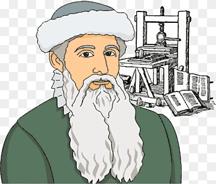
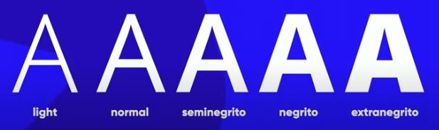

Tipografia
Uma das invenções que provocou uma verdadeira revolução no terreno da escrita e da leitura foi a imprensa, isto é, a máquina de impressão tipográfica inventada pelo alemão Johann Gutenberg no século XV.
Anatomia do tipo
Metricos
- A letra X é o ponto de partida de construção de todas as fontes » altura x
- Altura das maiusculas
- Ascendente
- Descendente
- Corpo
Serifa
- Nem todas as fontes tem serifa
- Serifa guia a leitura e facilita a leitura
Anatomicos geometricos
- Haste
- arco
- filete
- esporão
- vertice
- terminal
Anatomicos de letras (fontes, glifo)
Conjunto de todos os glifos em uma determinada familia é chamado de fonte
Varios formatos na mesma fonte (familia tipografica)
Categoria de fontes
recomendação para textos longos em sites
- Usar fontes não serifadas
- Espaço lateral da fonte não pode ser muito proximo
- Sempre usar cores complementares
- Evitar fundos escuros e letras claras
- Optar sempre pelo que deu certo, fundo branco e letra escura